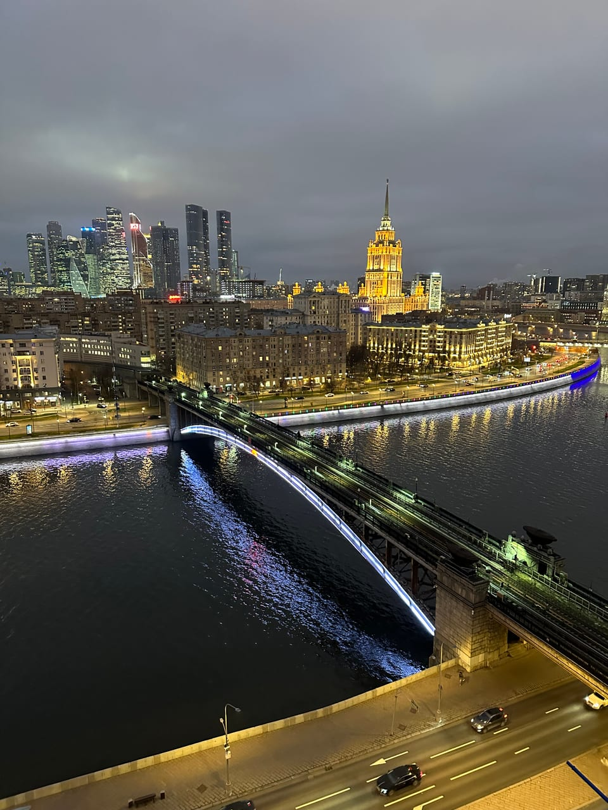

Статьи ·
Куда сводить девушку в Москве: варианты, которые запомнятся
Как выбрать формат свидания под характер пары и бюджет: что работает лучше ужина и кино и чем хороша прогулка по крыше на закате.
Сначала формат, потом место
Вопрос «куда сводить девушку» обычно решают по адресу: выбирают ресторан, смотрят отзывы, бронируют стол. Работает надёжнее обратный порядок — сначала понять, какое впечатление вы хотите оставить, а уже потом искать место. Вечер, после которого остаются общие воспоминания, а не чек, строится из трёх вещей: нового места, возможности спокойно поговорить и небольшого сюрприза. Еда в этом списке необязательна.
Как выбрать формат под характер пары
Универсального «лучшего места» нет, зато есть простой способ не промахнуться: честно ответить, как вы оба любите проводить время.
- Любите разговаривать. Подойдут форматы, где можно идти и говорить: вечерняя прогулка, набережная, неспешный маршрут по району. Шумные места и аттракционы здесь только мешают.
- Любите движение и азарт. Квесты, мастер-классы, иммерсивные спектакли: общая задача снимает неловкость и показывает человека в непривычной роли.
- Любите красивые виды. Смотровые площадки, закаты у воды, высота. Здесь главное — чтобы вид был не на толпу, а на город.
- Не любите сюрпризы. Тогда лучше заранее обсудить план вместе: свидание не должно превращаться в экзамен на храбрость.
Бюджет: что на самом деле решает
Дорогое свидание не равно запоминающемуся. Ужин в модном ресторане может оказаться скучнее часа на скамейке с хорошим видом. Прикиньте, на что вы готовы потратиться, и вложите бюджет в одно сильное впечатление, а не в три средних. Всё остальное — тёплая одежда, разговор и хорошее настроение — стоит ровно ноль рублей.
Прогулка по крыше на закате: флагманская идея
Если хочется удивить, но без сложной организации, подойдёт организованная прогулка по крыше. Вы записываетесь, мы подтверждаем время и сообщаем место встречи, сопровождающий встречает вас и поднимает наверх. Дальше час только вы и Москва: без очередей, толпы и случайных людей в кадре. Подробнее о формате — на странице «Свидание на крыше».
Чем этот вариант удобен:
- Не нужно ничего организовывать самому. Не надо искать открытую дверь, договариваться с управляющей компанией и переживать, пустят ли вас: всё согласовано заранее, подъём проходит с сопровождающим.
- Это безопасно и спокойно. Вы на площадке не одни, есть инструктаж, а вам остаётся смотреть на город.
- Это необычно. Панорама с высоты сама создаёт настроение: разговор получается неторопливым, а общий восторг сближает лучше заготовленных тем.
- Есть из чего выбрать. В каталоге 11 крыш у метро Фили, Киевская, Курская, Марксистская, Новокузнецкая, Римская, Смоленская, Таганская и Шелепиха — с Кремлём, сталинскими высотками, Москвой-рекой или башнями Сити.
Почему именно закат
Самое красивое время для свидания на крыше — последний час перед закатом: тёплый свет, небо меняет цвет каждые несколько минут, а потом в городе зажигаются огни. Фотографии получаются мягкими даже на телефон. Как выбрать точку и поймать нужное время, разобрано в материале о закатах на крышах Москвы. Для вечернего ракурса со сталинской высоткой подойдёт крыша у метро Марксистская: с неё видна Котельническая высотка.
Что важно знать заранее
- Время. 1 час на площадке. Если площадка свободна, прогулку можно продлить ещё на час за 500 ₽ с человека.
- Стоимость. От 2000 ₽ за человека.
- Запись заранее. Через форму на сайте или в Telegram-боте. Точное место встречи сообщаем после подтверждения записи — адреса мы не публикуем.
- Фото. Снимать можно на телефон или прийти со своим фотографом; штатного фотографа в формате нет.
И честно о том, чего на крыше нет: ни пледов, ни шампанского, ни кейтеринга — это прогулка, а не банкет. Погоду мы не гарантируем, поэтому одежду лучше подбирать с запасом: на высоте всегда ветренее, чем внизу, а обувь нужна удобная и нескользящая. Ответы на остальные вопросы собраны в разделе FAQ.
Когда крыша не подойдёт
Честности ради: этот формат не для всех. Если один из вас боится высоты, лучше выбрать что-то на земле — через силу романтики не получится. Если вы любите шумные компании и музыку, час тихой панорамы может показаться слишком спокойным. А если у вас первая встреча и вы ещё плохо знакомы, подумайте, комфортно ли будет час провести вдвоём без отвлекающих занятий. Во всех остальных случаях это один из самых простых способов сделать вечер необычным.
Как не испортить вечер мелочами
Даже лучшая идея пробуксовывает на организации. Несколько простых правил помогут: договоритесь о времени с запасом, чтобы не бежать; проверьте прогноз и возьмите тёплый слой; зарядите телефон — кадры будут точно. И не перегружайте программу: одного сильного впечатления за вечер достаточно, после крыши можно просто пройтись пешком или выпить чай в ближайшем кафе, если захочется продолжить.
Если вы выбираете формат для сюрприза, при записи напишите в Telegram-бот, что это подарок для близкого человека, и согласуйте дату и время заранее. Подарочные сертификаты не выпускаются, поэтому подарок — это сама согласованная прогулка.
Читайте также: «Необычное свидание в Москве» — обзор идей от простых прогулок до часа вдвоём на крыше, и «Вечерняя Москва с крыши» — что видно после заката и когда стоит продлить час.
FAQ
Частые вопросы о свидании на крыше
Сколько стоит свидание на крыше?
Ориентир — от 2000 ₽ за человека за час на площадке. Если площадка свободна, прогулку можно продлить ещё на час за 500 ₽ с человека. Точные цены по крышам показывает Telegram-бот.
Нужно ли записываться заранее?
Да. Прогулка проходит по записи: оставьте заявку на сайте или напишите в Telegram-бот, мы подтвердим время, а точное место встречи сообщим после подтверждения.
Будут ли на крыше еда, напитки и фотограф?
Нет, это прогулка с сопровождающим, а не банкет: ни кейтеринга, ни пледов, ни штатного фотографа. Снимать можно на телефон или прийти со своим фотографом.
Над городом